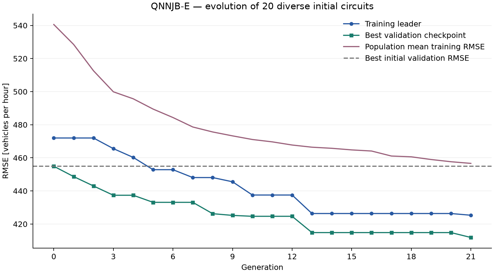
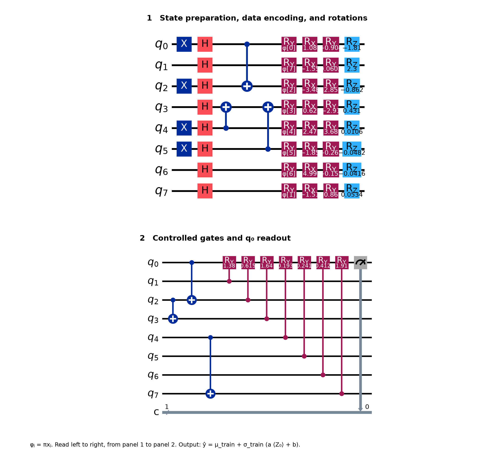

Intelligent Transport
One-hour-ahead traffic forecasting with QNNJB-E on the Metro Interstate Traffic Volume dataset.
Forecasting results
| Experiment | Starting model | After evolution |
|---|---|---|
| 30 trained QNNJB models | 399.20 | 380.00 (−4.81%) |
| 20 generated QNNJB variants | 444.16 | 409.10 (−7.89%) |
Across 30 seeds, the classical ANN achieved a mean test RMSE of 302.23 ± 11.63, and the fixed-architecture QNNJB achieved 435.75 ± 13.85 (mean ± standard deviation). The ANN had 3201 trainable parameters and the QNNJB had 33.
How the circuit evolved
The 20-variant run evaluated 1260 candidates over 21 generations. Structural mutations were followed by Adam refinement before selection. In 19 of 21 crossover events, both parents survived. The final validation-selected circuit came from the last crossover and used three CNOT gates in each of its two CNOT blocks, down from four per block at initialization.


Evaluation protocol
The chronological split contained 22,006 training, 7335 validation and 7337 test examples. Models were selected using validation error. Each evolutionary result comes from one noiseless simulation run. The reported improvements reflect the combined effect of structural search and further Adam training. Estimating the separate contribution of structural search would require an Adam-only control with a matched budget.